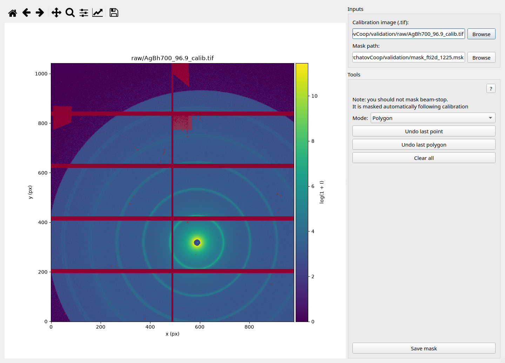
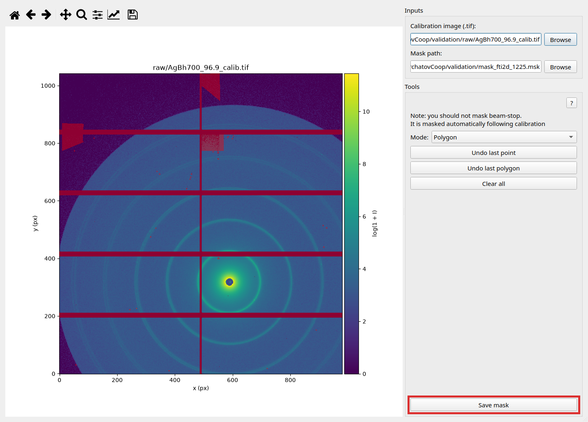

The Create / edit mask window draws beam-stop and bad-pixel masks for calibration. Open it from the calibration wizard via Create mask (or by left-clicking the calibrant image when one is loaded). Saved masks are referenced by the calibration form’s mask path and used when you Run calibration.
Work on the canvas with a drawing mode (polygon, pixel, or rectangular), undo as needed, then Save mask. Prefer excluding the beam-stop and obvious dead regions before running calibration.

From Calibration: Create mask (or left-click the loaded calibrant image when not zooming/panning).
Set Mode: to Polygon → click vertices on the canvas to add points → double-click to finish the current polygon. Use Undo last point / Undo last polygon if needed. You can draw multiple polygons; their interiors are combined.
Set Mode: to Rectangular → first click sets the top-left corner → second click sets the bottom-right corner and finishes the rectangle. Use Undo last corner / Undo last rectangle if needed. You can draw multiple rectangles; their interiors are combined. Clear all starts over.
Set Mode: to Pixel → click a pixel on the canvas to mask or unmask it (masked pixels show in red). Use Undo last edit to reverse the last toggle. Clear all starts over.
Confirm Mask path → Save mask → wizard commits the file and updates the calibration form.
